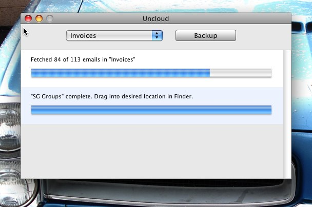

Uncloud

Uncloud is a Mac OS X utility which lets you backup and archive GMail folders. Uncloud is experimental software (written using PyObjC) - use it at your own risk!
- You need to enable IMAP in your GMail Settings page before using this app
- Login using your GMail address (username@gmail.com) and password
- Pick a folder/label to archive
- Once the backup process is complete, you can drag the archive file onto Finder
- Archive file is in the "Apple Mail" Mbox format and can be imported easily into Apple Mail
Downloads
Latest releases are available on the GitHub Downloads page
Source Code
Available on the GitHub project page